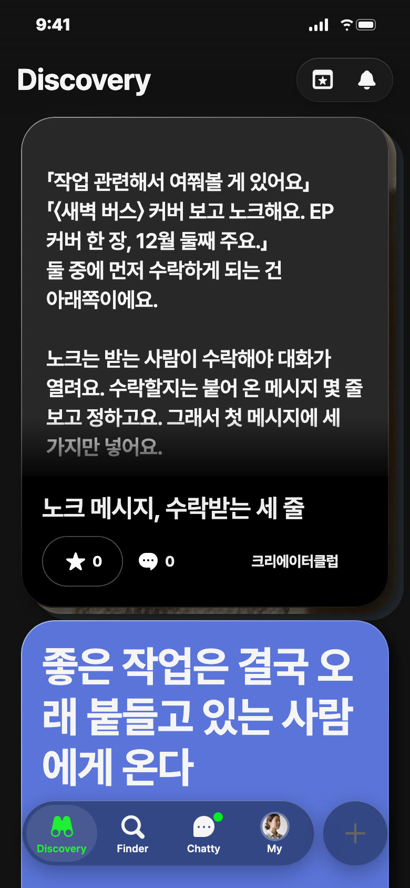
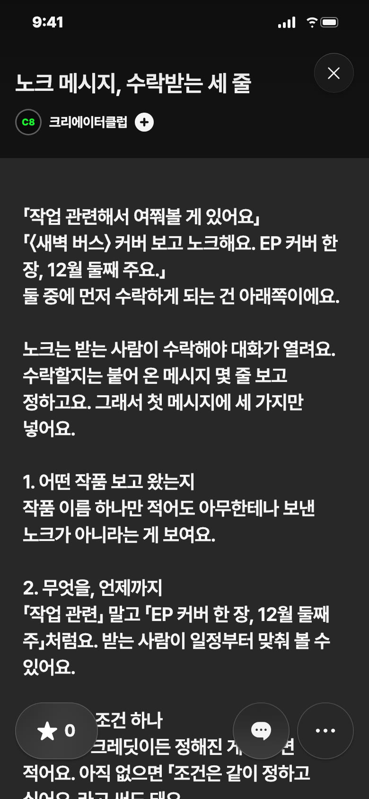
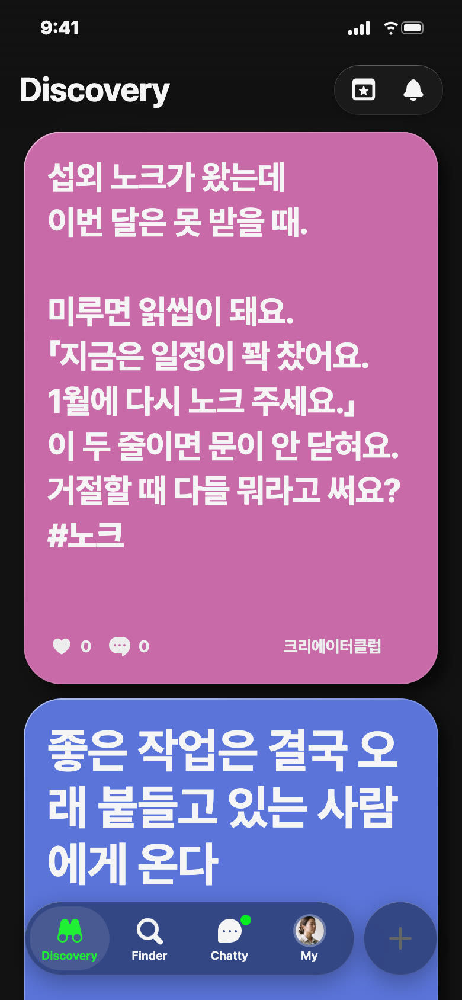
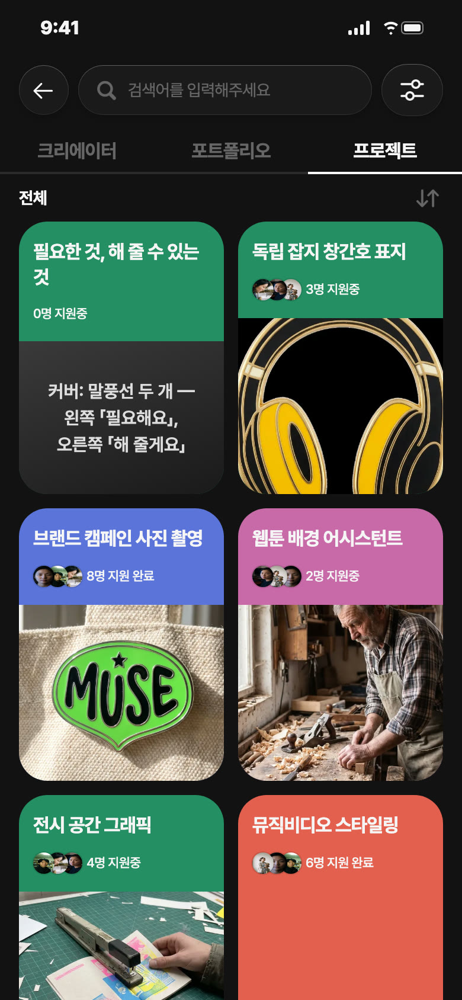
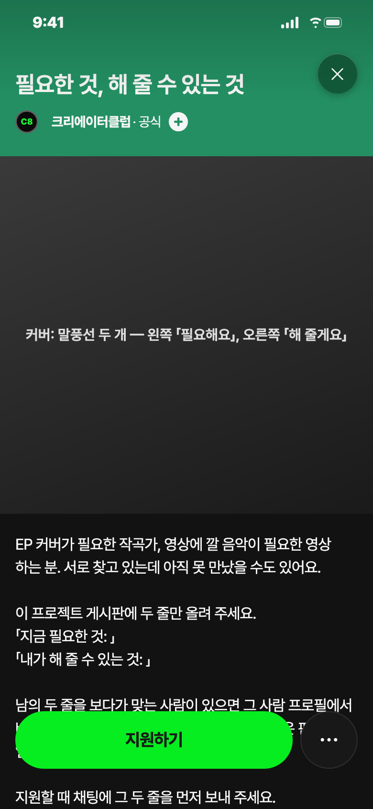

C8 앱 게시 시안 · 11/3(화) — 오늘 추천: 포트폴리오 · 낮 12시
오늘 추천 · 포트폴리오 · 파랑


왜 오늘: 화요일은 두고 다시 볼 긴 글 날이에요. 말 걸기 직전에 꺼내 보게요
보낼 사람: 노크 보낼까 말까 며칠째인 친구에게 「이거 보고 보내」
받고 싶은 댓글: 「〈작품명〉 보고 왔어요, 이 한 줄에 바로 수락했어요」
제목
노크 메시지, 수락받는 세 줄
긴 글 본문
「작업 관련해서 여쭤볼 게 있어요」 「〈새벽 버스〉 커버 보고 노크해요. EP 커버 한 장, 12월 둘째 주요.」 둘 중에 먼저 수락하게 되는 건 아래쪽이에요. 노크는 받는 사람이 수락해야 대화가 열려요. 수락할지는 붙어 온 메시지 몇 줄 보고 정하고요. 그래서 첫 메시지에 세 가지만 넣어요. 1. 어떤 작품 보고 왔는지 작품 이름 하나만 적어도 아무한테나 보낸 노크가 아니라는 게 보여요. 2. 무엇을, 언제까지 「작업 관련」 말고 「EP 커버 한 장, 12월 둘째 주」처럼요. 받는 사람이 일정부터 맞춰 볼 수 있어요. 3. 정해진 조건 하나 예산이든 크레딧이든 정해진 게 있으면 적어요. 아직 없으면 「조건은 같이 정하고 싶어요」라고 써도 돼요. 세 줄을 합치면 이렇게 돼요. 「〈새벽 버스〉 커버 보고 노크해요. 제 EP 커버 한 장 부탁드리고 싶어요. 12월 둘째 주 발매고, 예산은 30만 원 생각하고 있어요.」 용건은 여덟 개 중에 골라요. 일을 맡기려면 「섭외하고 싶어요」, 같이 만들려면 「같이 작업해요」, 봐 달라는 거면 「피드백 주세요」. 용건이 맞으면 메시지 첫 줄이 짧아져요. 여기 예시는 C8이 지어낸 거예요. 실제로 받고 바로 수락한 첫 줄이 있으면 댓글로 알려 줘요. 지어낸 예시보다 그게 더 쓸모 있어요. #노크 #첫메시지
설명
「작업 관련해서 여쭤볼 게 있어요」
비축 · 영감 · 다음 월요일 11/9 낮 12시 후보 · 분홍

칸: 일 받기 × 대화
왜 비축: 오늘 포폴(보내는 쪽)과 짝이라 받는 쪽으로 이어 가요
보낼 사람: 일 거절 못 해서 다 받는 친구에게 「이렇게 말해」
받고 싶은 댓글: 「3월엔 비어요, 그때 꼭 다시 연락 주세요」로 써요
영감 글
섭외 노크가 왔는데 이번 달은 못 받을 때. 미루면 읽씹이 돼요. 「지금은 일정이 꽉 찼어요. 1월에 다시 노크 주세요.」 이 두 줄이면 문이 안 닫혀요. 거절할 때 다들 뭐라고 써요? #노크
비축 · 프로젝트 · 초록


칸: 잇기 × 판 열기
왜 비축: 게시판 지킬 사람과 기간이 정해져야 올려요 — 수요일 1순위 후보
보낼 사람: 커버 맡길 사람 찾는 작곡하는 친구에게 「여기 올려 봐」
받고 싶은 지원 채팅: 「필요한 것: 뮤비 30초 컬러 보정 / 해 줄 수 있는 것: 앨범 커버 일러스트」
제목
필요한 것, 해 줄 수 있는 것
카테고리
함께하기 · 일 잇기
모집 내용
분야 상관없이 30명 · 프로젝트 게시판에 「지금 필요한 것」「내가 해 줄 수 있는 것」 두 줄 올리기 · 맞는 사람에게 직접 노크 · 조건은 둘이 정해요
설명
EP 커버가 필요한 작곡가, 영상에 깔 음악이 필요한 영상 하는 분. 서로 찾고 있는데 아직 못 만났을 수도 있어요. 이 프로젝트 게시판에 두 줄만 올려 주세요. 「지금 필요한 것: 」 「내가 해 줄 수 있는 것: 」 남의 두 줄을 보다가 맞는 사람이 있으면 그 사람 프로필에서 바로 노크하면 돼요. 조건은 두 분이 정하고, C8은 판만 열어요. 지원할 때 채팅에 그 두 줄을 먼저 보내 주세요.